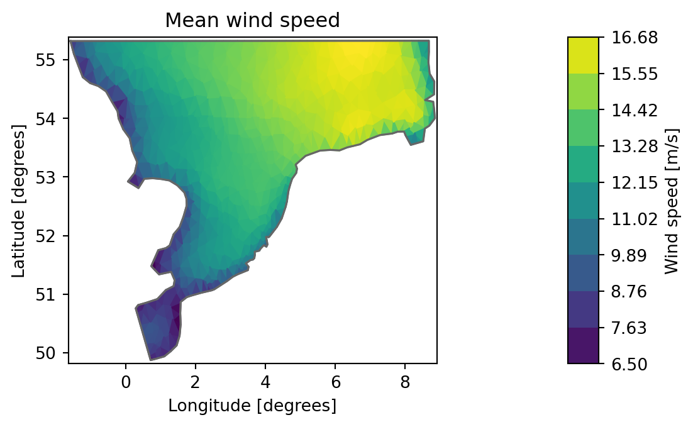
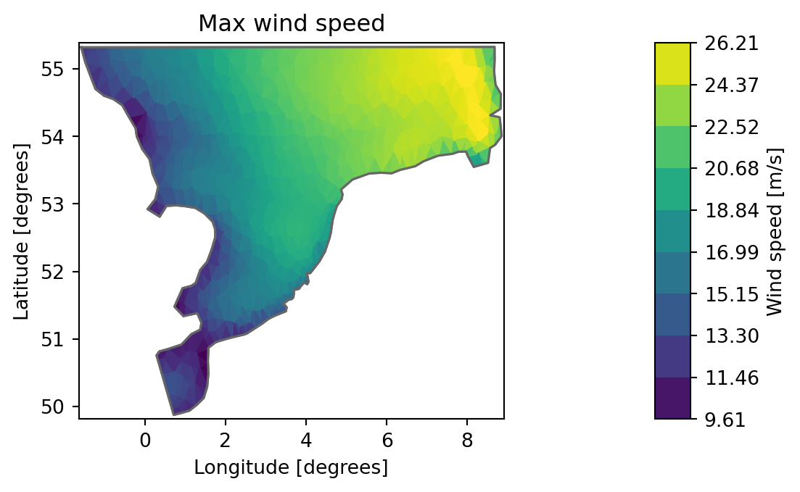
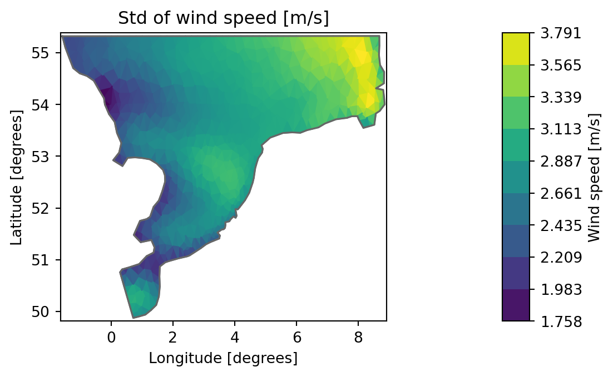
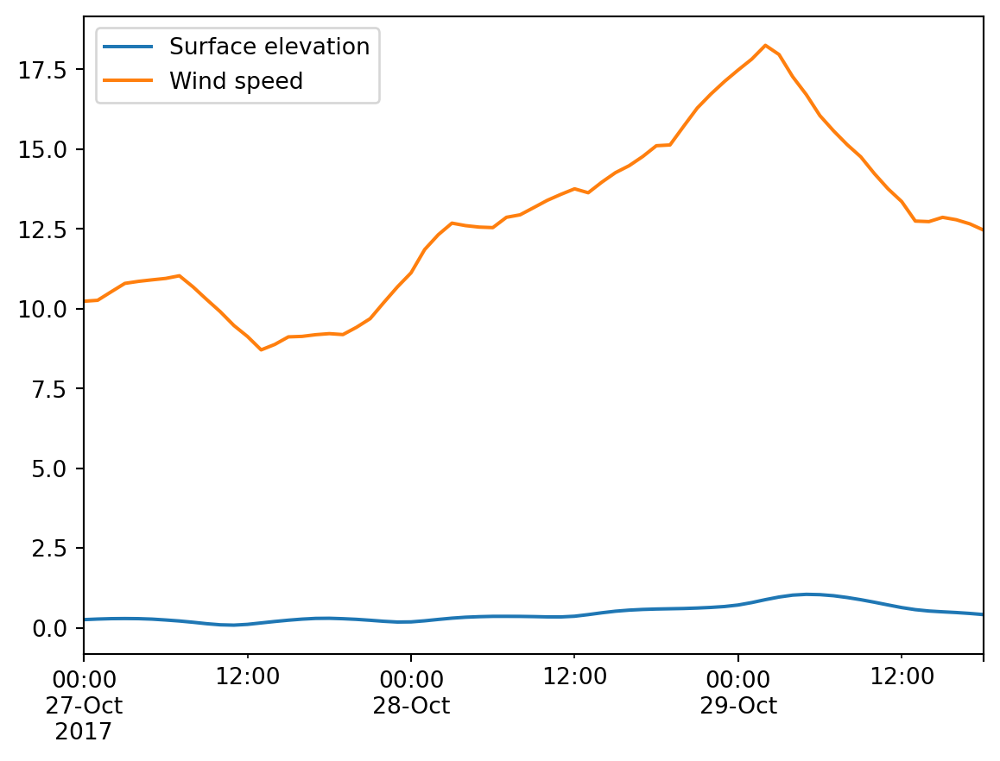
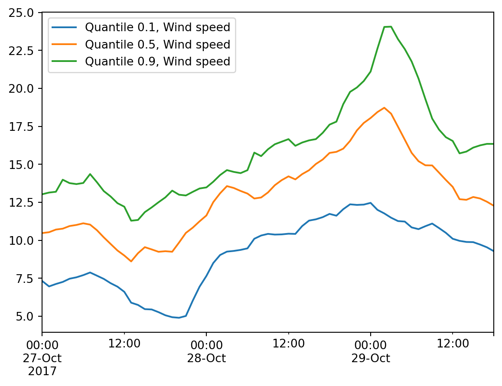
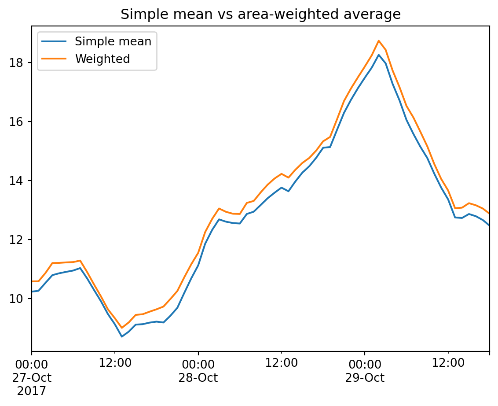
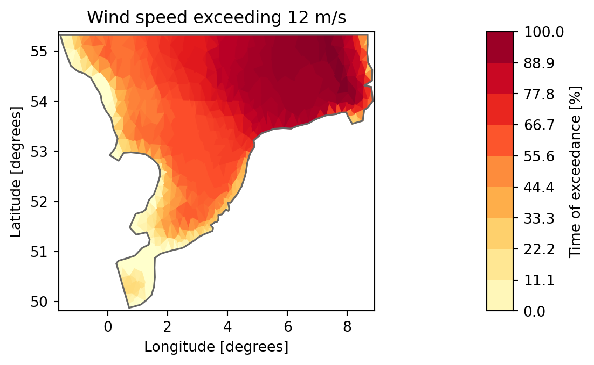

import numpy as np
import matplotlib.pyplot as plt
import mikeio
import mikeio.genericStatistics
After running a simulation, you often want to compute summary statistics — both for your own understanding and for communicating results.
Examples of statistics:
- Min, max, mean, standard deviation
- Quantiles/percentiles (e.g. median, interquartile range)
- Probability/frequency of exceedance
Types of aggregations:
- Temporal — aggregate all time steps; for a 2D file, the result is a spatial map
- Spatial — aggregate all elements to a single value per time step
- Total — aggregate all data to a single number
Ways of calculating:
mikeio.Dataset/mikeio.DataArray— in-memory, flexiblemikeio.generic— temporal aggregations on any dfs file, out-of-core for large files- Custom code with NumPy
ds = mikeio.read("../data/NorthSea_HD_and_windspeed.dfsu")
ds<mikeio.Dataset>
dims: (time:67, element:958)
time: 2017-10-27 00:00:00 - 2017-10-29 18:00:00 (67 records)
geometry: Dfsu2D (958 elements, 570 nodes)
items:
0: Surface elevation <Surface Elevation> (meter)
1: Wind speed <Wind speed> (meter per sec)Temporal aggregations
The default aggregation axis is time — the output is a spatial map.
Mean
ds_mean = ds.mean()
ds_mean["Wind speed"].plot(title="Mean wind speed");
Max
ds.max()["Wind speed"].plot(title="Max wind speed");
Quantiles
ds_q = ds.quantile(q=[0.1, 0.5, 0.9])
ds_q<mikeio.Dataset>
dims: (element:958)
time: 2017-10-27 00:00:00 (time-invariant)
geometry: Dfsu2D (958 elements, 570 nodes)
items:
0: Quantile 0.1, Surface elevation <Surface Elevation> (meter)
1: Quantile 0.5, Surface elevation <Surface Elevation> (meter)
2: Quantile 0.9, Surface elevation <Surface Elevation> (meter)
3: Quantile 0.1, Wind speed <Wind speed> (meter per sec)
4: Quantile 0.5, Wind speed <Wind speed> (meter per sec)
5: Quantile 0.9, Wind speed <Wind speed> (meter per sec)The quantile results can be written to a new dfsu file:
ds_q.to_dfs("NorthSea_quantiles.dfsu")Custom aggregations
Use aggregate() with any function that reduces along an axis:
ds_std = ds.aggregate(func=np.std)
ds_std["Wind speed"].plot(title="Std of wind speed [m/s]");
Spatial aggregations
Pass axis="space" to aggregate all elements into a time series.
ds.mean(axis="space").plot();
ds.Wind_speed.quantile(q=[0.1, 0.5, 0.9], axis="space").plot();
Warning
mean(axis="space") ignores element areas — all elements are weighted equally. For area-weighted averages, use average() with explicit weights.
Weighted spatial average
area = ds.geometry.get_element_area()
df_compare = (
ds[["Wind speed"]]
.mean(axis="space")
.to_dataframe()
.rename(columns={"Wind speed": "Simple mean"})
)
df_compare["Weighted"] = (
ds[["Wind speed"]]
.average(axis="space", weights=area)
.to_dataframe()
.values
)
df_compare.plot(title="Simple mean vs area-weighted average");
Total aggregations
Aggregate over both time and space.
ds.describe()| Surface elevation | Wind speed | |
|---|---|---|
| count | 64186.000000 | 64186.000000 |
| mean | 0.449857 | 12.772705 |
| std | 0.651157 | 3.694293 |
| min | -2.347003 | 1.190171 |
| 25% | 0.057831 | 10.376003 |
| 50% | 0.466257 | 12.653086 |
| 75% | 0.849586 | 14.885848 |
| max | 3.756879 | 26.213045 |
ds.min(axis=None).to_dataframe()| Surface elevation | Wind speed | |
|---|---|---|
| 2017-10-27 | -2.347003 | 1.190171 |
Out-of-core statistics (generic)
For large files that don’t fit in memory, use mikeio.generic to compute temporal statistics directly on disk:
mikeio.generic.avg_time(
"../data/NorthSea_HD_and_windspeed.dfsu",
"NorthSea_avg.dfsu",
) 0%| | 0/66 [00:00<?, ?it/s]100%|██████████| 66/66 [00:00<00:00, 24430.68it/s]mikeio.read("NorthSea_avg.dfsu", items="Wind speed")["Wind speed"].plot(
title="Mean wind speed (generic)"
);mikeio.generic.quantile(
"../data/NorthSea_HD_and_windspeed.dfsu",
"NorthSea_quantiles_generic.dfsu",
q=[0.1, 0.5, 0.9],
)Exceedance probability
Calculate the fraction of time a threshold is exceeded at each location.
threshold = 12 # m/s
wind = ds["Wind speed"].values # shape: (time, element)
n_exceed = np.sum(wind > threshold, axis=0)
prob_exceed = n_exceed / ds.n_timesteps
item = mikeio.ItemInfo("Exceedance probability", mikeio.EUMType.Probability)
da_exc = mikeio.DataArray(
data=prob_exceed * 100,
time=ds.time[0],
item=item,
geometry=ds.geometry,
)
da_exc.plot(
title=f"Wind speed exceeding {threshold} m/s",
label="Time of exceedance [%]",
cmap="YlOrRd",
);
Cleanup temporary files:
import os
for f in [
"NorthSea_quantiles.dfsu",
"NorthSea_avg.dfsu",
"NorthSea_quantiles_generic.dfsu",
]:
if os.path.exists(f):
os.remove(f)